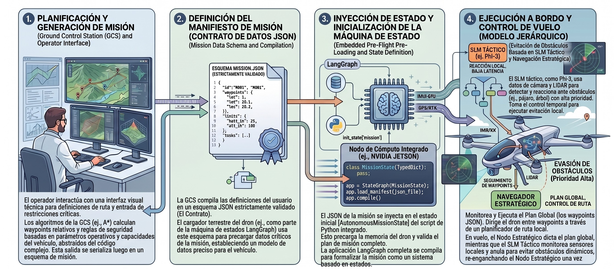
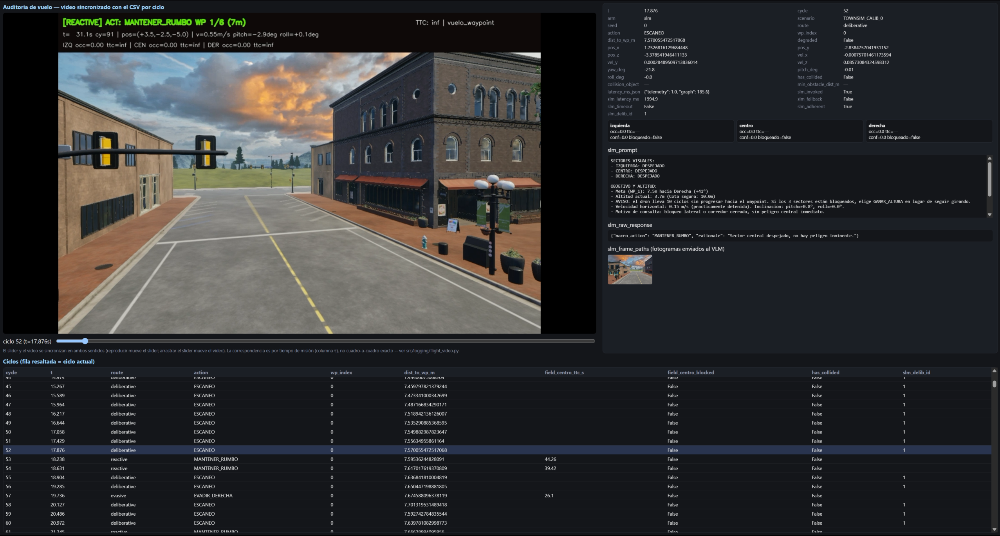

4. Planificación de misiones y estación de control en tierra (WebDCS)¶
4.1 Arquitectura desacoplada: dos cerebros (tierra vs. vuelo)¶
La arquitectura general del sistema responde a un principio de diseño fundamental: la separación estricta entre la planificación deliberativa global previa al vuelo (ejecutada en tierra) y la navegación táctica reactiva (ejecutada a bordo durante el vuelo). Esta división, conceptualizada como una arquitectura de dos cerebros, resuelve la asimetría intrínseca de recursos computacionales y tolerancias de latencia entre ambas fases operativas:
- El planificador de estación terrena (
airsim-plan/ WebDCS): opera de manera previa al despegue del vehículo. En esta etapa, el sistema puede tolerar presupuestos de tiempo del orden de 5 a 10 segundos para interpretar instrucciones en lenguaje natural, consultar información contextual del entorno, aplicar reglas de seguridad operacional y generar un plan de vuelo global validado. - El lazo táctico a bordo (
airsim-loop): opera en tiempo real estricto una vez que el vehículo está en el aire (capítulo 5). Bajo una frecuencia objetivo de 5 a 10 Hz, su función no es diseñar la ruta global sino mantener la estabilidad cinemática, seguir los objetivos asignados y ejecutar maniobras reactivas inmediatas de evasión de obstáculos a partir de visión monocular ligera.

El desacoplamiento permite que la misión sea validada, persistida y versionada de forma determinista antes de iniciar los motores. Asimismo, garantiza que el lazo táctico a bordo no dependa de una conexión de red permanente con la estación terrena: una vez transmitido el manifiesto de vuelo, el dron opera de forma enteramente autónoma, protegiendo la seguridad del vuelo ante eventuales pérdidas de enlace de radio o telemetría.
4.2 Compilación de misiones desde lenguaje natural¶
El módulo de planificación en tierra integra un modelo de lenguaje (LLM) que actúa como compilador semántico. Su objetivo es transformar directivas operativas de alto nivel expresadas en lenguaje natural por un operador humano (por ejemplo, "recorrer el perímetro norte a 10 metros de altura evitando zonas de alta densidad vehicular") en un artefacto estructurado y ejecutable por el piloto automático.
Para garantizar la fiabilidad del proceso de compilación sin incurrir en alucinaciones o errores de sintaxis:
- Se utiliza un cliente local compatible con la API de OpenAI (conectado a instancias locales de LM Studio u Ollama), ejecutando modelos orientados a seguimiento de instrucciones (tales como Llama-3-8B, Qwen-7B o Phi-4).
- Se define un System Prompt formalizado (
compiler_system.md) que instruye al modelo sobre las dimensiones del entorno de simulación, las restricciones del espacio aéreo urbano y el formato de salida requerido. - Se implementa una capa de coerción y extracción de JSON (
json_extract.py) respaldada por esquemas de validación estricta en Pydantic (manifest.py). Si la salida generada por el LLM no cumple con los tipos de datos o las restricciones cinemáticas impuestas, el compilador rechaza el plan y solicita una reevaluación antes de comprometer el vuelo.
Cabe una aclaración sobre el alcance actual de la interfaz: si bien el compilador semántico descripto en esta sección está completamente implementado y expuesto como endpoint del backend, la interfaz de WebDCS en su estado presente no ofrece ningún control para invocarlo. La superficie de interacción del operador quedó acotada, por decisión de alcance del proyecto, a la edición manual de waypoints sobre la carta de navegación (§4.4.1) — priorizando el desarrollo del control de vuelo por sobre la interfaz de planificación asistida. La compilación desde lenguaje natural queda documentada aquí como una capacidad ya construida y validada, disponible para reincorporarse a la interfaz sin cambios en el backend.
4.3 El contrato del Manifiesto de Misión (MissionManifest)¶
El producto final del planificador terrestre es un archivo JSON denominado MissionManifest. Este documento actúa como un contrato formal e inmutable entre la estación terrena y el lazo táctico de vuelo. Su schema canónico está definido en Pydantic (manifest.py) y validado contra un JSON Schema (manifest_schema.json).
{
"mission_id": "CITYMAP_PILOT",
"summary": "Tier 2: circuito tipo grilla urbana sobre citysim_ortho.png ...",
"start_pose": { "x": 0.0, "y": 0.0, "z": -10.0, "yaw_deg": 90.0 },
"waypoints": [
{"x": 3.0, "y": -51.0, "z": -10.0, "label": "WP_0_SUR"},
{"x": 26.1, "y": -78.2, "z": -10.0, "label": "WP_1"},
{"x": 68.9, "y": -78.6, "z": -10.0, "label": "WP_2"},
{"x": 67.7, "y": -156.5, "z": -10.0, "label": "WP_3"},
{"x": 26.5, "y": -145.0, "z": -10.0, "label": "WP_4"},
{"x": -16.3, "y": -145.0, "z": -10.0, "label": "WP_5"},
{"x": -17.9, "y": -78.6, "z": -10.0, "label": "WP_6"},
{"x": 12.5, "y": -78.6, "z": -10.0, "label": "WP_7"}
],
"map": "citysim_ortho.png"
}
Manifiesto vigente citysim_pilot.json (cap. 10 §10.3.3 explica WP_0_SUR; el mapa se describe en §4.3.2).
Componentes del contrato:¶
mission_id: identificador único en formato^[A-Z0-9_]{3,32}$, validado por el schema. Identifica el escenario experimental y aparece en los nombres de carpeta de telemetría.summary: descripción textual de la intención operativa (campo opcional, no consumido por el lazo táctico).waypoints: lista ordenada de puntos de paso tridimensionales en el marco NED (North-East-Down): \(z < 0\) representa altitud sobre el punto de despegue. Cada waypoint lleva una etiqueta opcional (label) para identificación en la traza.map: nombre de la imagen cenital del escenario. WebDCS la usa para ubicar y mostrar los waypoints, y el planificador de ruta (§4.3.1) para decidir por dónde va cada tramo. La escala (px/m) y el origen de cada imagen se declaran enairsim-plan/missions/maps/map_scales.json, con la convención: centro de la imagen =ned_offset, arriba = norte (+x), derecha = este (+y). Como el plan de ruta se deriva del mapa, un mapa mal registrado sí afecta al vuelo (§4.3.2).start_pose(opcional): pose de partida; solo se usa con--seed-jitter, porque el runner devuelve el dron al spawn desettings.json(cap. 10 §10.4.3). Debe coincidir con ese spawn.
Separación entre manifiesto y consultas en vuelo. El manifiesto entrega únicamente metas geométricas. Las consultas del lazo lento no forman parte de él porque dependen del fotograma, la pose y el waypoint activo de ese instante. Hay dos (cap. 5 §5.10, §5.12):
- Capa estratégica: el recorte cuadrado central del fotograma frontal, dividido en una grilla de 3×3, con la dirección del destino. La respuesta dice, para cada uno de los nueve sectores, si se puede volar al menos 15 m en esa dirección.
- Barrido (solo en un deadlock): cuatro imágenes tomadas girando en el lugar. La respuesta dice, para cada una, si se puede volar recto 15 m; el rumbo de cada imagen lo conoce el código.
En la configuración final las dos preguntas las responde la red de profundidad estimada (cap. 5 §5.10.6, cap. 6 §6.14): el p5 de la profundidad de cada sector frente a 15 m. Con STRATEGIC_SOURCE = vlm o DEADLOCK_STRATEGY = deep_vlm las responde el VLM, con prompts que se arman en vuelo y decodificación restringida (json_schema) a esquemas sin campo de acción (cap. 8 §8.5). En los dos casos el código convierte la respuesta en una sub-meta en coordenadas del mundo, que el WaypointTracker inserta delante del waypoint del manifiesto como un waypoint temporal.
4.3.1 Plan de ruta con el VLM sobre el mapa cenital¶
El manifiesto une los waypoints en línea recta, y en una ciudad la recta suele cruzar una manzana. En vuelo, la cámara ve solo lo que tiene delante a 10 m de altura y el sistema debe inferir por dónde rodear un edificio cuyo final no ve; desde arriba, la misma pregunta se vuelve de reconocimiento: si una línea dibujada sobre el mapa va por la calle o por encima de los edificios. Es el tipo de juicio que un VLM pequeño resuelve mejor, porque no exige estimar distancias en primera persona. Por eso la estación terrena agrega un paso de planificación con el VLM antes del despegue (src/planning/route_planner.py): corre una sola vez por misión, la misión espera su resultado y nada de esto ocurre dentro del lazo táctico.
- Candidatas geométricas. Para cada tramo A → B (incluido el tramo desde el spawn al primer waypoint) se generan rutas sin mirar el mapa: la recta, las dos rutas en L (primero norte-sur o primero este-oeste) y desvíos paralelos a ±25 y ±50 m a cada lado.
- Juicio del VLM. La versión final juzga cada candidata por parches (
ROUTE_JUDGE=patches, ver más abajo). La primera versión (ROUTE_JUDGE=corridor), que se describe a continuación, dibujaba cada candidata como un pasillo del ancho que necesita el dron (ROUTE_CORRIDOR_M, 10 m), sobre su propio recorte del mapa. El recorte se rota para que la ruta vaya del inicio (abajo, verde) al destino (arriba, azul), se acerca a la candidata (672 × 672 px) y fuera del pasillo el mapa se oscurece. Así el modelo juzga qué hay debajo del pasillo y no si una línea fina roza un techo. Se le pregunta si todo el pasillo es calle o terreno abierto. El prompt de sistema completo es:
You see a top-down city map. The bright strip outlined in red is a drone path from the green dot (bottom) to the blue dot; the rest is darkened. Answer yes only if the whole strip covers street or open ground, with no building, trees or elevated road inside it. Reply with JSON only.
y el mensaje, Drone altitude 10 m. Is the whole bright strip street or open ground? yes or no. La respuesta se fuerza con decodificación restringida a yes/no (temperatura 0), y la probabilidad de yes se lee de los logprobs del token de la respuesta. El modelo del planificador se configura con ROUTE_LLM_MODEL_NAME (anexo A6); en la versión final es el mismo modelo de vuelo.
3. Elección. Entre las candidatas que el modelo aprobó se toma la de mayor probabilidad (con parches, la de mayor puntuación); a menos de 0.05 de la mejor, la más corta. Si no aprobó ninguna, queda la recta y el tramo se resuelve en vuelo como siempre. Los vértices intermedios de la elegida se insertan en el manifiesto como waypoints VIA_<WP>_<k> (con planned_via: true y la altura del waypoint de destino), delante del waypoint del tramo.
El modelo evalúa; el código solo genera las opciones y toma la mejor según el propio modelo. El plan completo —cada candidata con su imagen, respuesta y probabilidad, la elegida y el motivo— queda en <out-dir>/<escenario>/route_plan/ junto al manifiesto planificado, y se cachea por contenido (waypoints, mapa, modelo y prompt): Con --route-plan vlm, runner.py y batch_runner.py planifican una vez por escenario antes de la primera corrida, de modo que todas las semillas y brazos de un lote vuelan el mismo plan, y cada summary.json registra el plan con el que voló (route_plan). --route-plan off vuela el manifiesto tal cual.
Juicio por parches (versión final). Las dos primeras formas de preguntar fallaron. En las pruebas sobre citysim_pilot, ninguno de los dos modelos evaluados distinguió una candidata que va por la calle de una que cruza el techo de un edificio:
- Con la línea sobre el mapa: Qwen2.5-VL-3B rechazó las 37 candidatas, y LFM2.5-VL-1.6B aprobó todas.
- Con el pasillo: ambos aprobaron todas.
- Con la pregunta invertida («¿el pasillo cruza algún techo?»): ambos respondieron «sí» a todas, incluida la recta que va por la calle.
La respuesta dependía de la forma de la pregunta y no de la imagen. La versión final (ROUTE_JUDGE=patches) le pide al modelo lo que sí hace bien, reconocer qué hay en una imagen, en lugar de juzgar una ruta entera: cada candidata se muestrea cada ROUTE_PATCH_STEP_M (8 m); en cada punto se recorta un parche de ROUTE_PATCH_M (16 m) con ROUTE_PATCH_CONTEXT_M (48 m) de contexto, y el modelo lo clasifica en una de cinco clases (calle, edificio, árboles, estacionamiento, autopista elevada) con decodificación restringida. La puntuación de la candidata es la probabilidad media de «calle» leída de los logprobs; gana la de mayor puntuación (a menos de 0.05, la más corta).
Estado en la versión final: activado (ROUTE_PLAN_MODE=vlm, ROUTE_JUDGE=patches) sobre el mapa registrado de CitySim (§4.3.2). En el banco de prueba la puntuación separa las rutas libres de las bloqueadas con AUC 0.81, y en el único tramo de citysim_pilot con la recta bloqueada el plan elige un desvío libre (cap. 11 §11.0). Es la única tarea del sistema en la que el VLM aporta una señal medible. El lote de TownSim (cap. 11 §11.6) se voló con --route-plan off: el mapa townsim_calib.png no está verificado como registrado con el mundo de AirSim, y el plan podría sacar la ruta del corredor que se quería probar.
4.3.2 Mapa cenital registrado¶
El plan de ruta solo tiene sentido si el mapa coincide con el mundo de vuelo. El mapa de CitySim se construye con el propio simulador (airsim-plan/scripts/capture_ortho_map.py): el dron se reubica sobre una grilla de puntos a 1000 m de altura con la cámara frontal apuntando 90° hacia abajo y un campo visual de 15°, de modo que la vista es casi ortográfica. De cada toma se usa la mitad central y se la pega en el lienzo a 2 px/m, con el origen NED en el centro de la imagen, el norte arriba y el este a la derecha. La orientación y la escala se verifican en el arranque desplazando el dron 20 m al norte y 20 m al este y midiendo el corrimiento de la imagen por correlación de fase.
Unreal Engine carga el escenario por zonas alrededor del punto de vista, y desde 1000 m no carga la zona de abajo: la imagen muestra solo calles y bases vacías. Por eso, antes de cada toma el dron baja a 40 m sobre el punto (la carga se completa en unos 3 s), vuelve a subir y captura enseguida. La toma se acepta cuando la fracción de píxeles de edificio, medida con la profundidad, deja de crecer entre dos capturas; un criterio por color no sirve, porque el agua animada nunca se estabiliza y una zona sin cargar está quieta. El resultado, citysim_ortho.png, cubre la ciudad completa (1920 m norte-sur por 1640 m este-oeste) y es el mapa de todas las misiones de CitySim.
En el marco de la metodología experimental de esta tesis (capítulo 10), el uso de manifiestos estructurados garantiza la reproducibilidad experimental: los escenarios de benchmark por Tiers (minisim_clear, townsim_ini, citysim_clear) se definen a través de manifiestos fijos e inmutables, asegurando que las comparaciones de rendimiento entre brazos de control (SLM, FSM y reactivo) se inicien exactamente con las mismas metas cinemáticas y espaciales.
4.4 Estación Terrena WebDCS: planificación y auditoría post-vuelo¶
WebDCS (Web-based Drone Control Station) es la interfaz de control en tierra, construida sobre FastAPI con frontend en HTML5, CSS y JavaScript. Expone su API REST en http://localhost:8000 y sirve el panel de operación como aplicación web estática.

Funcionalidades de WebDCS:¶
-
Gestión interactiva de cartas y waypoints: El panel incorpora un visor Canvas 2D que superpone la trayectoria del manifiesto sobre la carta del entorno urbano (
CitySim). El operador puede cargar manifiestos existentes desdeairsim-plan/missions/flightplans/, visualizar la ruta proyectada y editar waypoints interactivamente sobre la carta — agregar, reordenar, eliminar y ajustar altitud — antes de guardar o lanzar. -
Lanzamiento y detención de misión: El botón Lanzar invoca
POST /api/launch, que persiste el manifiesto y arrancaairsim-loopen un hilo de fondo sin bloquear la interfaz.POST /api/stopdetiene todos los runners activos.POST /api/resetreinicia el simulador AirSim y libera el control de la API.
Dataset de corridas: estructura de airsim-runs/¶
Cada ejecución de una misión escribe una carpeta autocontenida en airsim-runs/. Desde main.py (WebDCS), el nombre de la carpeta y el prefijo común (<stem>) de sus archivos es <MISSION_ID>-<YYYYMMDDTHHMMSSZ>: el mission_id del manifiesto más la hora de inicio en UTC, en ISO 8601 compacto. Por ejemplo, lanzar CITYSIM_CLEAR el 7 de septiembre de 2026 a las 19:12:26 UTC produce CITYSIM_CLEAR-20260907T191226Z. El ejecutor de experimentos (experiments/runner.py) ubica cada corrida en una jerarquía por celda experimental, <escenario>/<brazo>/<celda>/seed_<N>_<timestamp>/, con <stem> = seed_<N>_<timestamp>; la celda es la estrategia de deadlock (depth, deep_vlm, blind) o, si el lote varía la fuente de la capa estratégica, strat_<fuente>__<estrategia> (cap. 10 §10.9.1). En ningún caso una corrida sobrescribe a otra.
Archivos de una corrida¶
| Archivo | Lo escribe | Contenido |
|---|---|---|
<stem>.jsonl |
FlightLogger, ciclo a ciclo |
Traza completa: un objeto JSON por ciclo, con el DroneState serializado |
<stem>.csv |
FlightLogger |
La misma traza en columnas, más el DroneState aplanado en columnas state.<ruta> |
<stem>.summary.json |
FlightLogger.close() y finalize_run |
Indicadores de la corrida: éxito, colisiones, DistMin, recorrido, consultas, deadlocks, plan de ruta, versión del código |
<stem>.summary_by_wp.csv |
FlightLogger.close() |
Ciclos, duración, ciclos de barrido y eventos de barrido por objetivo |
<stem>.distmin.ndjson |
hilo de auditoría (distmin_audit.py) |
Muestras de distancia mínima a obstáculo, una por segundo |
<stem>.console.log |
runner | Copia de la salida de consola de la corrida (stdout y stderr) |
<stem>.webm |
FlightVideoRecorder |
Video de la cámara frontal, un cuadro por ciclo, con overlay |
<stem>.follow.webm |
follow_cam.py |
Video de la cámara externa FollowCam (si está definida en settings.json), un cuadro por ciclo |
<stem>.viewer.html |
flight_viewer.py |
Visor de auditoría autocontenido |
photo-<ISO_UTC>.png |
FlightLogger |
Fotogramas de cada consulta del lazo lento (capa estratégica y barrido), a resolución completa |
Además, a nivel de escenario, el runner deja route_plan/ con el plan de ruta y sus imágenes (cap. 4 §4.3.1), y batch_runner.py agrega en la raíz RESULTS_SUMMARY.json (una fila por corrida) y RESULTS_SUMMARY.batch_version.txt.
Traza por ciclo (.jsonl). Cada línea es un ciclo del lazo y tiene estos campos:
| Campo | Contenido |
|---|---|
t, cycle |
Segundos desde el inicio de la corrida y número de ciclo |
arm, scenario, seed |
Celda de la corrida |
pos, vel, yaw_deg, pitch_deg, roll_deg |
Posición NED, velocidad (vx, vy, vz) y actitud |
route, action |
Ruta que decidió el ciclo y macro-acción emitida (cap. 5 §5.3) |
obstacle_field |
ObstacleField completo: por sector, ocupación, TTC, confianza y bloqueo; fuente (flow, holdover, degraded) y confianza del FOE (cap. 6) |
latency_ms |
Duración del ciclo del grafo (graph) y de la lectura de telemetría (telemetry) |
slm |
Presente en los ciclos con una consulta del lazo lento: identificador, latencia, fallback, timeout, adherencia al esquema, prompt (vacío con la profundidad), respuesta cruda (con la profundidad, el p5 estimado por sector en metros) y rutas de los fotogramas (frame_paths) |
collision |
Colisión y objeto contra el que ocurrió |
wp_index, dist_to_wp_m |
Objetivo activo y distancia horizontal a él |
degraded |
AirSim no respondió en el ciclo (cap. 5 §5.5) |
deadlock_event |
Solo en el ciclo en que un deadlock se resuelve o cae al escape: estrategia, si lo resolvió el barrido, ciclos que llevó, si cayó al escape vertical, la macro, la respuesta cruda y la selección del rumbo de salida (scan_selection: candidatos, descartados con su motivo, rumbo que falló, modo y rumbo elegido; cap. 5 §5.12) |
perception |
Señales del StallDetector (contacto por IMU, avance sin movimiento, nivel de vibración, ciclos detenido) |
state |
El DroneState completo del ciclo |
min_obstacle_dist_m |
Siempre vacío desde el 30 de septiembre: la distancia mínima la mide la auditoría aparte (.distmin.ndjson) |
El campo state hace que la traza no dependa de haber previsto qué registrar: guarda todas las claves del estado (cap. 5 §5.2) con reglas fijas (state_serializer.py). Las imágenes y los búferes de fotogramas se reemplazan por su forma (<ndarray shape=(720, 1080, 3)>); deliberations se resume en su cantidad y la última entrada, sin prompts (que ya están en el bloque slm); los textos se cortan a 600 caracteres, las listas a 40 elementos y el anidamiento a 6 niveles, y los valores no finitos se escriben como texto ("inf", "nan") para que cada línea sea JSON válido. La serialización nunca detiene el vuelo: si falla, el ciclo registra el error en lugar del estado.
Traza plana (.csv). Durante el vuelo se escribe en streaming con un conjunto fijo de columnas, que sirve de respaldo si el proceso muere: identificación (t, cycle, arm, scenario, seed, route, action, wp_index, dist_to_wp_m, degraded), cinemática (pos_*, vel_*, actitud), colisión, latencias, la consulta del ciclo (slm_invoked, slm_latency_ms, slm_fallback, slm_timeout, slm_adherent, slm_prompt, slm_raw_response, slm_delib_id, slm_frame_paths), estado de control (ctrl_*: contador de atasco, maniobra comprometida y ciclos restantes, señales del StallDetector, ciclos sin progreso) y el campo de obstáculos por sector (field_<sector>_occ, _ttc_s, _conf, _blocked, field_source). Algunas columnas ctrl_* de versiones anteriores del grafo (ctrl_depth_m, ctrl_traj_*, ctrl_stuck_invisible) se conservan vacías para que los CSV de todas las épocas tengan las mismas columnas. Al cerrar la corrida, el CSV se reescribe agregando el DroneState aplanado: una columna state.<ruta> por cada valor escalar del árbol (por ejemplo state._vlm_strategic.outcome). El prompt y la respuesta completos están en el CSV, y no solo en el JSONL, para poder analizar las consultas sin cruzar archivos.
Resumen de corrida (.summary.json). Lo consumen analyze.py, analyze_tesis_results.py y analyze_strategic_batch.py. Campos:
- Identificación:
scenario,seed,arm,code_version(hash del commit, con sufijo-dirtysi había cambios sin confirmar; cap. 10 §10.9.3),deadlock_strategy,strategic_sourceyroute_plan(modo y plan con el que voló). - Misión:
success,cycles,duration_s,path_length_my, cuando corresponde,termination_reason(por ejemplophysics_locked) yfreeze_recoveries. - Seguridad:
collisionsy DistMin (min_obstacle_dist_m, conmin_obstacle_dist_t,min_obstacle_dist_sourceymin_obstacle_dist_samples). - Lazo lento:
slm_invocations(consultas nuevas, contadas una vez por identificador),deliberation_rate,slm_fallback_rate,slm_timeout_rate. - Rutas:
route_histogram, ciclos por ruta. - Atascos:
deadlock_events,deep_scan_events,deep_scan_resolution_rate,deep_scan_avg_cycles_to_resolve,deep_scan_fallback_rate,deep_scan_futile_rate,vertical_escapes.
Resumen por objetivo (.summary_by_wp.csv). Columnas wp_index, wp_label, cycles, duration_s, deliberative_cycles, deliberative_rate y deep_scan_events. El índice cuenta los objetivos tal como los recorrió el tracker, incluidas las sub-metas insertadas, y la etiqueta es la del waypoint de misión al que pertenecen: varias filas pueden tener la misma etiqueta. Sirve para ver en qué tramo se concentra la dificultad sin abrir la traza.
Auditoría de DistMin (.distmin.ndjson). Una línea por muestra, cada DISTMIN_TRACK_PERIOD_S (1 s): t (hora epoch), dist_m (percentil 5 del tercio central de la profundidad de la cámara frontal) y la posición x, y, z en el instante de la muestra. La escribe un hilo aislado, con su propia conexión al simulador, que no comparte nada con el grafo (cap. 5 §5.16); finalize_run consolida el mínimo en el resumen. Como cada muestra lleva su posición, se puede calcular DistMin por tramo (cap. 11 §11.6.2); su t es hora epoch, distinta del t relativo de la traza.
Fotogramas (photo-<ISO>.png). Cada consulta del lazo lento guarda el fotograma crudo que le dio origen, a resolución completa (no la versión reducida que viaja en el pedido), nombrado con su hora de captura en UTC con milisegundos; un barrido guarda sus cuatro imágenes. La columna slm_frame_paths de la traza enlaza cada consulta con sus archivos. Con la capa estratégica de profundidad hay del orden de un fotograma por segundo de vuelo.
Cierre y reparación (finalize_run). Es el último paso de toda corrida del runner y es idempotente: consolida DistMin en el resumen y, si el proceso murió antes de cerrar, reconstruye el CSV con las columnas state.* a partir del JSONL (que se vacía a disco ciclo a ciclo), repara el índice de los videos y regenera el visor. Una corrida interrumpida se cierra a mano con python experiments/finalize_run.py <carpeta> (o --all <raíz> para todas las incompletas).
Visor de auditoría (.viewer.html)¶

El visor es un único archivo HTML que se genera al cerrar cada corrida. Lleva la traza embebida como JSON dentro de la página, de modo que se abre con doble clic, sin servidor: un navegador bloquea, desde file://, la lectura de otro archivo local con fetch, pero sí reproduce un video de la misma carpeta. Tiene cuatro partes:
- Videos sincronizados. El video frontal (lo que ve el grafo) y, si existe, el de la cámara externa
FollowCam, uno al lado del otro. El externo sigue al frontal en reproducción, pausa, velocidad y saltos. Los dos tienen un cuadro por ciclo, de modo que la correspondencia entre video y traza es por número de ciclo y no por tiempo: el período real del lazo varía y el tiempo derivaría. - Barra de ciclos. Un control deslizante sobre todos los ciclos, sincronizado en ambos sentidos con el video, con el ciclo y el tiempo actuales.
- Panel de detalle del ciclo. Todas las columnas del CSV del ciclo; los tres sectores del
ObstacleFieldcomo recuadros (ocupación, TTC, confianza, resaltados si están bloqueados); el prompt y la respuesta cruda si en ese ciclo llegó una consulta; las imágenes exactas de esa consulta, y elDroneStatecompleto como árbol desplegable. - Tabla de ciclos. Una fila por ciclo con ciclo, tiempo, ruta, acción, objetivo, distancia, TTC y bloqueo del sector central, colisión e identificador de consulta. La fila actual se resalta y se centra al avanzar el video; un clic en una fila lleva el video a ese ciclo.
El uso típico es partir de un evento del resumen —un deadlock, una colisión, la muestra de DistMin más baja— y llevar el visor a ese ciclo: el video muestra la escena, el panel muestra qué percibió el sistema y qué decidió, y el árbol del estado muestra por qué (contadores de atasco, sub-meta activa, resultado de la capa estratégica). Así se auditaron los modos de falla del capítulo 9.
Anotaciones del video¶
El video (.webm) registra un fotograma por ciclo del lazo, a la misma cadencia de LOOP_HZ. Cada fotograma lleva un overlay de cuatro líneas superpuesto sobre una copia del fotograma; el original, que usan la percepción y la capa estratégica y que se guarda como .png de auditoría, queda sin modificar para no contaminar la evidencia perceptual.
Línea 1 — ruta activa y macro-acción (texto grande, color codificado):
[KEEP_GOING] ACT: MANTENER_RUMBO WP 3/7 (42m)
- El tag entre corchetes es la ruta (
route) del comportamiento que resolvió el ciclo (cap. 5 §5.3):REACTIVE(crucero sin novedad, vuelo bajo el piso óptico o descenso bajo un techo),EVASIVE(evasión reactiva o continuación de una maniobra comprometida),GIRAR_90(giro ante un frente bloqueado),DELIBERATIVE(barrido de resolución de atasco en curso o resuelto),TACTICAL(escape vertical cuando el barrido no resolvió o conblind),FSM(brazo FSM) oDEGRADED(modo degradado, cap. 5 §5.5). ACT:es la macro-acción traducida a comando cinemático por el nodomotor.WP X/N (Ym)indica el objetivo activo y la distancia restante segúnWaypointTracker(cap. 5 §5.15).Ncuenta también las sub-metas insertadas en vuelo, de modo que crece durante la misión.- Color: verde para
MANTENER_RUMBO, naranja para maniobras de evasión, giro o escape vertical, rosa paraFRENAR.
Línea 2 — TTC frontal y estado de vuelo (derecha del fotograma):
TTC: 3.2s | vuelo
TTCes el tiempo estimado a colisión del sector frontal según elObstacleFielddel ciclo (cap. 6);infsignifica sector despejado.- El campo de texto refleja el estado general de la misión (
vuelo,completada,colisión).
Línea 3 — telemetría del ciclo:
t= 18.4s cy=92 | pos=(+26.1,-78.2,-10.0) | v=2.31m/s pitch=-3.2deg roll=+0.8deg
tycypermiten cruzar el fotograma con la fila exacta del CSV por número de ciclo (la sincronización por tiempo es aproximada, la de ciclo es exacta; verflight_video.py).poses la posición 3D en el marco NED del simulador; si el guiado detectó un techo (§5.15.3), se agregaceil=<cota>a continuación.v,pitch,rollson la velocidad horizontal y la actitud del vehículo en ese instante.
Línea 4 — estado del ObstacleField por sector (cap. 6):
C occ=0.62 ttc=3.2s! | I occ=0.11 ttc=inf | D occ=0.08 ttc=inf
- Los tres sectores son
C(centro / frente),I(izquierda) yD(derecha). occes la fracción de ocupación estimada por flujo óptico monocular;ttces el tiempo a colisión estimado del sector;!marca el sector como bloqueado según el umbral deis_blocked().- Estos valores son los mismos que usa el lazo rápido de
navigate(cap. 5 §5.3): el overlay permite ver, ciclo a ciclo, qué evidencia perceptual motivó la decisión visible en la línea 1. La capa estratégica no los recibe: mira el fotograma directamente (cap. 5 §5.10).
La combinación de estas cuatro líneas permite reconstruir, para cualquier instante del vuelo, exactamente qué percibió el sistema, por qué se activó el comportamiento que aparece en el tag, y qué orden cinemática emitió — sin necesidad de cruzar a mano el video con el CSV.